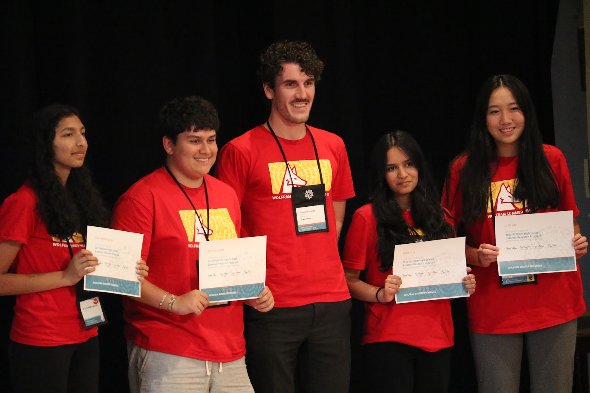
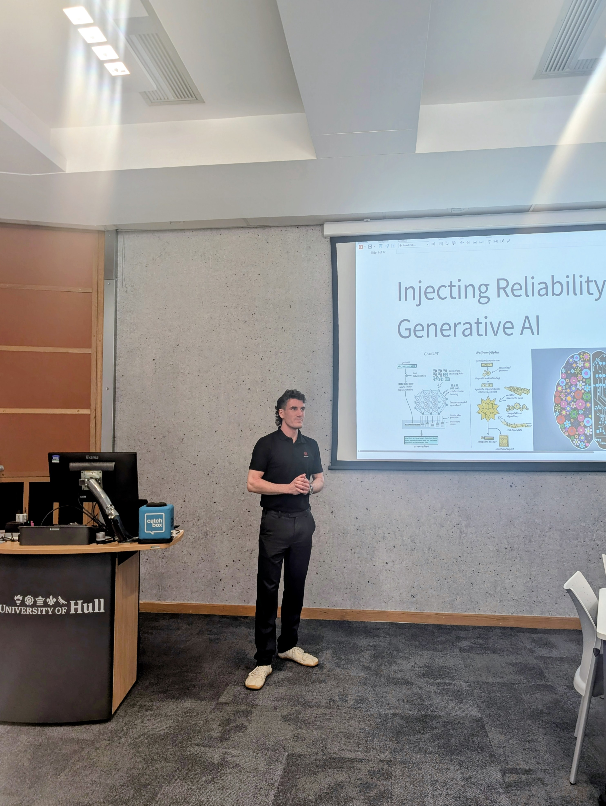
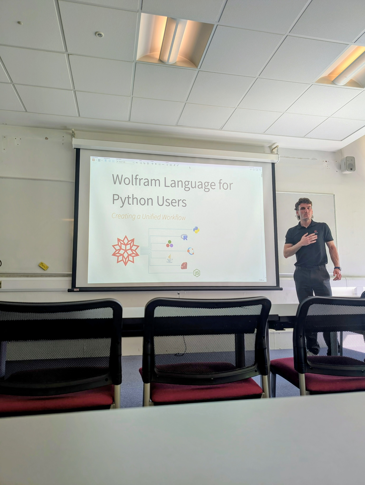
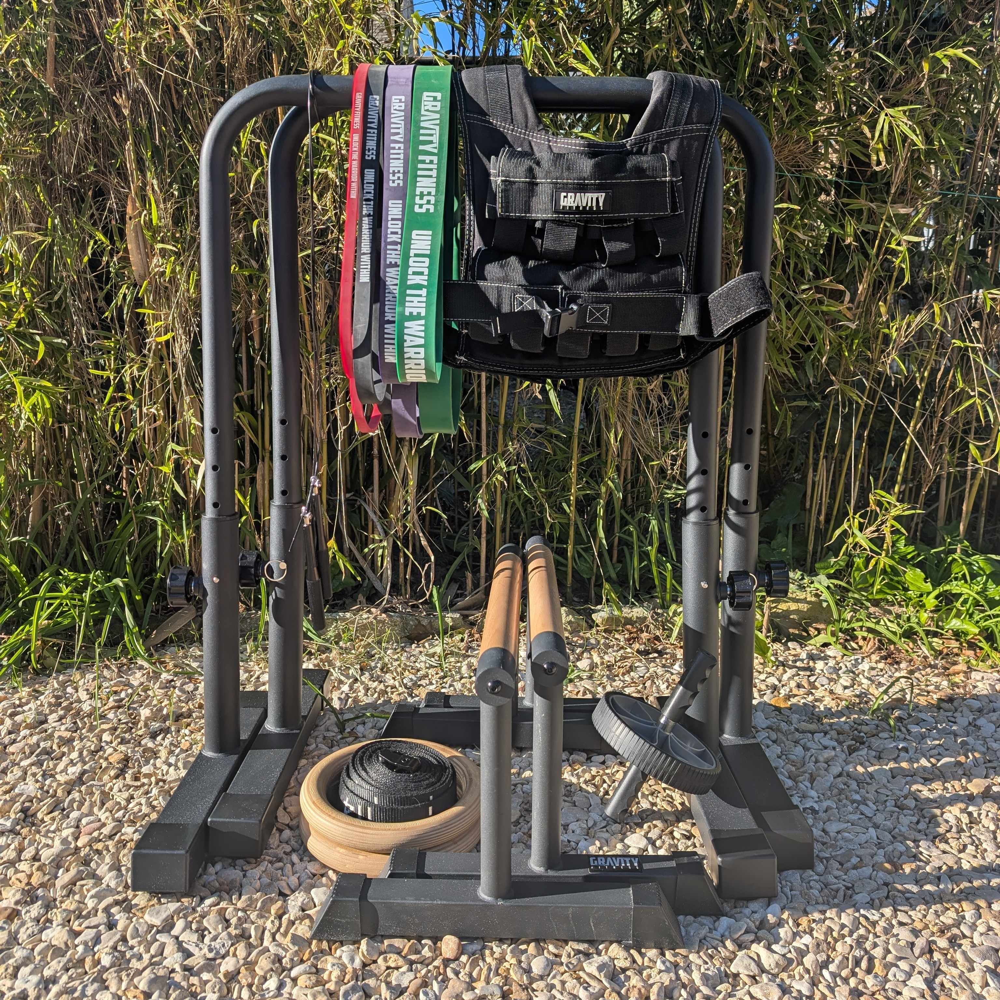
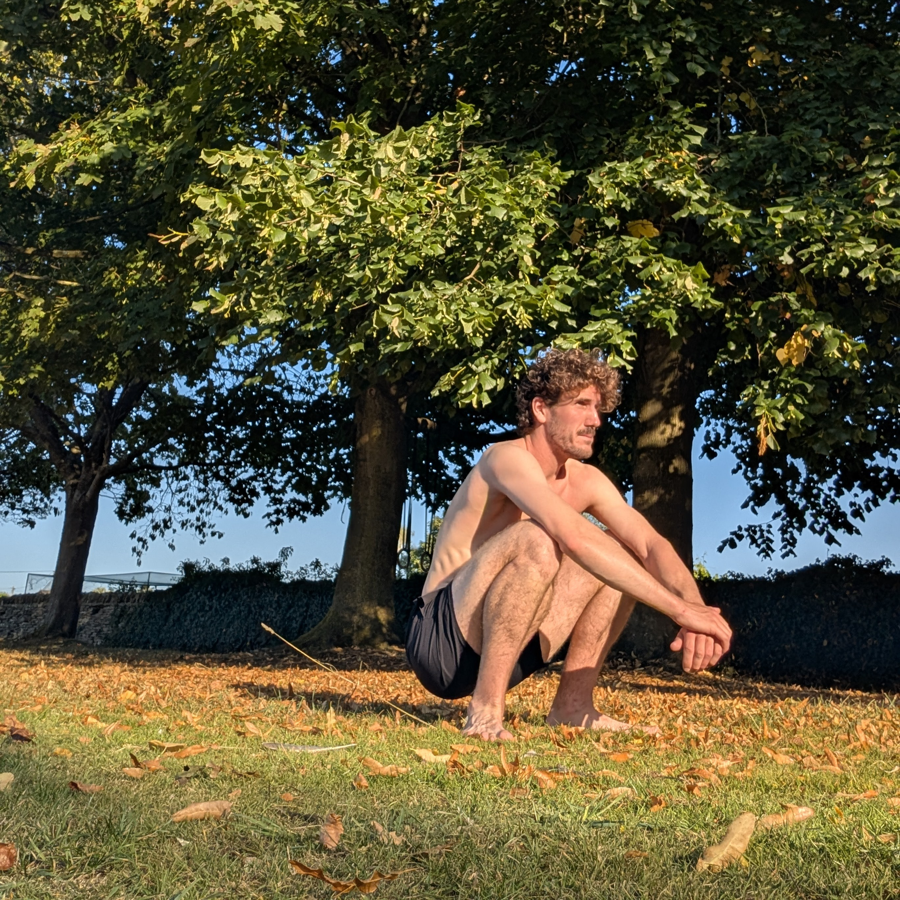

Joseph Brennan
Senior Technical Consultant at Wolfram Research.
About Me
For two years, I have worked for the technical consulting department of Wolfram Research.
My background in astrophysics allows me to effectively solve complex problems and deliver high-quality results. I also conduct training and webinars showcasing the capabilities of Wolfram products.
I am also an educator, a productivity tool tinkerer, and a calisthenics athlete.
References
Joseph was an excellent support during my A levels, always very approachable and made challenging concepts much easier to understand. Super patient and helped me build confidence in completing my physics exams!
Charlotte - Former Student
Joseph is a great teacher who communicates clearly. His lessons are always thoroughly planned and he is always happy to help outside of lesson time.
Vas - Former Student
My Productivity System
Projects
- A strategy-based game for finding Perfect Scrabble Games — perfectscrabblegames.com
- A Wolfram Community Post on statistical Poker exploration — (here)
- My Wolfram Function Repository functions — (here)
Some featured consulting work:
Events
A selection of my speaking engagements and other appearances:
| Event | Location | Talk Title | Date |
|---|---|---|---|
| University of Manchester Training | Manchester, UK |
|
April 2026 |
| University of Hull Training | Hull, UK |
|
April 2026 |
| Oxford Brookes Psychology Department | Oxford, UK | Introduction to Wolfram Technologies | Feb 2026 |
| Wolfram High School Research Program | Boston, MA | N/A | July 2025 |
| EURO 2025 | Leeds, UK | OR - More Than Just Optimization | June 2025 |
| Durham University Industry Partner Day | Durham, UK | Machine Learning and Neural Networks | June 2025 |
| Arma Suisse - Wolfram Training | Online | Machine Learning and Neural Networks | June 2025 |
| GITEX Europe 2025 | Berlin, Germany | N/A | May 2025 |
| Imam Abdulrahman Bin Faisal University - Wolfram Training | Online | Digital Innovation using Wolfram Tools and Software | March 2025 |
| Swiss Federal Institute of Intellectual Property - Wolfram Training | Bern, Switzerland | Symbolic Programming and Generative AI | March 2025 |
| Nestlé - Wolfram Training | Online | New in Wolfram Version 14.2 | March 2025 |
| Laboratoire Ondes et Matière d'Aquitaine - Wolfram Training | Online | Wolfram Technology for Physics Research | Feb 2025 |
| Arden University | Online | Wolfram Language for Data Science | Jan 2025 |
| Ajman University | Online | Generative AI and Symbolic Programming | Jan 2025 |
| DNV - Wolfram Training | Oslo, Norway | Generative AI and Symbolic Programming | Oct 2024 |
Here is a YouTube Playlist of webinars I have delivered.
Media

My mentee group at WSRP 2025 at Bentley University, MA

Speaking at Hull University, UK

Speaking at Manchester University, UK
Travel
Calisthenics

Current Equipment Stack

Outdoor Calisthenics Training